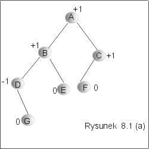
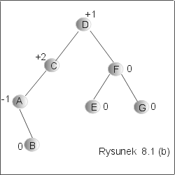
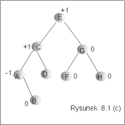

| « poprzedni punkt | nastêpny punkt » |
Podstawow± wad± drzew binarnych poszukiwañ by³ liniowy koszt operacji memebr, insert i delete w przypadku pesymistycznym. Zwi±zane to by³o z tym, ¿e niektóre ¶cie¿ki drzewa mog³y mieæ d³ugo¶æ du¿o wiêksz± ni¿ inne. Na przyk³ad, gdy wk³adamy do drzewa BST k elementów uporz±dkowanych rosn±co, to jedna ze ¶cie¿ek prawego poddrzewa wyd³u¿y siê o k wierzcho³ków, powoduj±c znaczne pogorszenie kosztów wyszukiwania. Adelson, Velskii, Landis zaproponowali strukturê danych, która ma wszystkie zalety drzew binarnych poszukiwañ, a dodatkowo wszystkie ¶cie¿ki od korzenia drzewa do li¶ci maj± w tej strukturze podobn± d³ugo¶æ. Strukturê tê, od nazwisk autorów pomys³u, nazywa siê w literaturze, struktur± AVL.
Niech h(D) oznacza wysoko¶æ drzewa D, a LD(v) i PD(v) lewe i prawe poddrzewo wierzcho³ka v. Przyjmujemy dodatkowo dla pustego drzewa D, h(D)=-1.
Bezpo¶rednio z powy¿szej definicji wynika, ¿e drzewo binarne jest wywa¿one, je¶li funkcja wag dla tego drzewa przypisuje wierzcho³kom tylko warto¶ci 0, 1, -1.
Przyk³ad 8.1
Na rysunku 8.1 przedstawiono drzewo binarne z wagami przypisanymi wierzcho³kom. Wszystkie li¶cie maj± wagê równ± 0. Wierzcho³ek A ma wagê równ± +1, poniewa¿ lewe poddrzewo ma wysoko¶æ 2, a prawe poddrzewo wysoko¶æ 1. Podobnie dla wierzcho³ków B i C. Wierzcho³ek D ma wagê równ± -1, poniewa¿ lewe poddrzewo jest puste a prawe poddrzewo sk³ada siê tylko z jednego wierzcho³ka E i w zwi±zku z tym jego wysoko¶æ wynosi 0. Z analizy warto¶ci wag wynika, ¿e jest to drzewo wywa¿one. J
|  |  |
Przyk³ad 8.2
Drzewo na rysunku 8.1(a) nie jest drzewem binarnych poszukiwañ, je¶li porz±dek liniowy, obowi±zuj±cy w¶ród etykiet tego drzewa, to porz±dek alfabetyczny. Drzewo przedstawione na rysunku 8.1(b) jest drzewem binarnych poszukiwañ ze wzglêdu na porz±dek alfabetyczny etykiet, ale nie jest drzewem wywa¿onym. Zatem ¿adne z drzew na rysunkach 8.1 nie jest drzewem AVL. Natomiast drzewo na rysunku 8.1(c) jest wywa¿onym drzewem binarnych poszukiwañ, jest wiêc drzewem AVL. J

Operacje na drzewie AVL s± typowymi operacjami na zbiorach uporz±dkowanych (u¿ywamy tych samych nazw operacji, jak w przypadku drzew BST):
member: Et ´ AVL ® B0
min: AVL ® Et
insert: Et ´ AVL ® AVL
delete: Et ´ AVL ® AVL
Algorytmy operacji member i min s± identyczne jak w przypadku drzew
BST, gdy¿ ich wykonanie nie modyfikuje struktury drzewa. Pozosta³e
operacje wykonuje siê podobnie jak na drzewach BST z tym, ¿e w
przypadku, gdy otrzymany rezultat nie jest drzewem AVL, wykonuje siê
dodatkowo wywa¿anie drzewa, tak aby wynik koñcowy by³ drzewem
AVL. O zasadach wywa¿ania bêdzie mowa w nastêpnym punkcie tego
wyk³adu.
Implementacja drzewa AVL wymaga informacji o wagach wierzcho³ków. Wygodnie jest w tym celu rozwa¿aæ obiekty node wzbogacone o atrybut hv, którego warto¶ci± jest wysoko¶æ drzewa o korzeniu w rozwa¿anym wierzcho³ku. W niektórych aplikacjach przydatna te¿ jest referencja father do bezpo¶redniego poprzednika danego wierzcho³ka, na ¶cie¿ce w kierunku korzenia drzewa.
class node{ lub class node{
val : Et; val : Et;
hv : int; hv : int;
left, right : node; left, right, father : node;
} }
Te dodatkowe informacje pozwol± wyliczyæ szybko wagi wierzcho³ków i poruszaæ siê po drzewie od li¶ci w kierunku korzenia.
Pytanie 1: Z ilu wierzcho³ków
sk³ada siê najmniejsze drzewo AVL o wysoko¶ci 3?
| « poprzedni punkt | nastêpny punkt » |